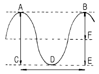
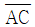
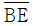
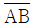
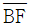
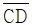
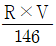
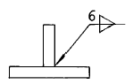
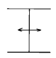
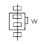

전산응용조선제도기능사 (2002-07-21 기출문제)
1과목: 조선공학일반
1. 선박에 있어서 총톤수는?
- 선박의 전중량을 표시한 것
- 선박에 적재할 수 있는 화물의 용적
- 화물 또는 여객을 수송하기 위한 장소의 용적
- 선박의 전체 용적을 표시한 것
(정답률: 알수없음)

2. 공선(工船)은 어느 분류에 속하는 선박인가?
- 여객선
- 화객선
- 화물선
- 어선
(정답률: 알수없음)
3. 추진기관에 따른 선박의 발달과정이 옳게 표시된 것은?
- 범선 - 증기기관선 - 디젤기관선 - 원자력선
- 증기터빈선 - 증기왕복동기관선 - 가솔린기관선 - 원자력선
- 범선 - 디젤기관선 - 증기기관선 - 원자력선
- 증기기관선 - 범선 - 증기터빈선 - 디젤기관선
(정답률: 알수없음)
4. 한강에 길이 20 m,폭 5 m,흘수 3 m인 상자형 모래 운반선이 있다. 이 배에 모래를 실어 운반선이 5 cm 침하(沈下)하였다면 적재한 모래의 무게는?
- 1톤
- 3톤
- 5톤
- 10톤
(정답률: 알수없음)
5. 수선면 2차모멘트 계산은 무엇을 계산하기 위한 것인가?
- 침수 표면적
- 메타센터 반경
- 부심위치
- 배수용적
(정답률: 알수없음)
6. 그림은 트로코이드 파이다. 파고는 어느 것인가?


또는



(정답률: 알수없음)
7. 와류의 발생에 기인하는 저항은?
- 마찰 저항
- 조와 저항
- 조파 저항
- 공기 저항
(정답률: 알수없음)
8. 선박이 속도 Ｖ(노트)로 끌려갈 때, 로프의 수평장력이 Ｒ(kg)이었다면

는 어떤 마력인가?- 지시마력
- 제동마력
- 축마력
- 유효마력
(정답률: 알수없음)
9. 대형 디젤기관은 어느 것에 속하는가?
- 보통 저속기관이다.
- 보통 중속기관이다.
- 보통 고속기관이다.
- 보통 초고속기관이다.
(정답률: 알수없음)
10. 콘크리트 선박의 특징을 잘못 설명한 것은?
- 재료를 얻기 쉽다.
- 내화성, 내구성이 크다.
- 진동이 적다.
- 고속선에 적합하다.
(정답률: 알수없음)
11. 강선의 선체용 재료로서 가장 많이 사용되는 강재의 종류는?
- 강판, 형강
- 주강, 단강
- 형재, 주철
- 주철, 주강
(정답률: 알수없음)
12. 강의 상온취성을 일으키는 원소는?
- 주석
- 유황
- 망간
- 인
(정답률: 알수없음)
13. 키(rudder)의 기둥이 없고, 키면의 일부(20-30%)가 회전축의 앞쪽에 있으며 같은 흘수에 대해서 유효단면이 큰 키는?
- 불균형키
- 균형키
- 반균형키
- 반동키
(정답률: 알수없음)
14. 어떤 선박의 배수용적이 3000 m3일 때 이 선박의 해수 중 배수량은?
- 3125 ton
- 3⑤5 ton
- 3075 ton
- 3000 ton
(정답률: 알수없음)
15. 일반적으로 선박의 형 흘수와 일치하는 흘수선은?
- 하기 만재 흘수선
- 동기 만재 흘수선
- 열대 만재 흘수선
- 하기 담수 만재 흘수선
(정답률: 알수없음)
16. 선박의 복원력에 영향을 미치지 않는 것은?
- 배의 길이
- 배의 나비
- 건현
- 중심
(정답률: 알수없음)
17. 키가 소요의 각도로 돌아갔을 때 키를 그 위치에서 고정시키는 장치는?
- 원동기
- 조종장치
- 전동장치
- 추종장치
(정답률: 알수없음)
18. 선박의 중앙횡단면이 U자 형인지 V자 형인지 쉽게 알 수 있는 계수는?
- 중앙횡단면계수
- 주형계수
- 수직주형계수
- 수선면계수
(정답률: 알수없음)
19. 선박의 방열, 방음장치 재료로 이용되지 않는 것은?
- 석면
- 글라스 울
- 합금
- 코르크
(정답률: 알수없음)
20. 액체 화학제품 운반선의 탱크 크기, 위치, 설비를 규정하고 있는 협약은?
- ILLC
- IMCO
- ILO
- SOLAS
(정답률: 알수없음)
2과목: 선박건조
21. 빌지 킬(bilge keel) 및 외판의 배치를 결정하는 데 사용되는 도면은?
- 외판전개도
- 계획선체선도
- 선수미 구조도
- 중앙횡단면도
(정답률: 알수없음)
22. 산형강, I 형강 등의 굴곡 및 변형교정에 많이 사용되는 가열방법은?
- 선조가열
- 점가열
- 삼각가열
- 적열법
(정답률: 알수없음)
23. 조선소에서의 가공공사 작업 내용은?
- 마킹작업에서 소조립까지의 작업
- 강판 절단으로부터 소조립까지의 작업
- 밀스케일 제거로부터 절단까지의 작업
- 마킹작업에서 절단까지의 작업
(정답률: 알수없음)
24. 강판의 절단변형을 방지하는 방법으로 부적당한 것은?
- 피절단재로 고정시킨다.
- 수냉으로 열을 제거한다.
- 절단부분과 대칭되는 판의 가장자리를 먼저 예열시켜 열의 평형을 유지시킨다.
- 피닝(peening)을 한다.
(정답률: 알수없음)
25. 가스 용접과 비교한 아크 용접의 장점으로 틀린 것은?
- 가스의 폭발 위험이 없다.
- 열의 영향을 적게 받는다.
- 후판을 효율적으로 용접할 수 있다.
- 용접시 작업 시간이 단축된다.
(정답률: 알수없음)
26. 조립용 지그와 관계 없는 것은?
- 스트롱 백(strong back)
- 도그 피스(dog piece)
- 해머(hammer)
- 문형 피스(門型 piece)
(정답률: 알수없음)
27. 블록 탑재 용접시 맞대기 이음부의 틈이 6 - 16 mm 인 경우 수정 용접 방법은?
- 용접 비드를 덧붙여 용접한다.
- 받침쇠(backing strip)를 사용하여 용접한다.
- 판을 치환하여 용접한다.
- 라이너(liner)를 넣어 용접한다.
(정답률: 알수없음)
28. 조선 작업 공정 중 대형 크레인과 가장 관계가 깊은 공정은?
- 가공공정
- 현도공정
- 탑재공정
- 조립공정
(정답률: 알수없음)
29. 어셈블리(assembly)공사의 잇점이 아닌 것은?
- 공정 및 공작기술의 관리 감독 용이
- 가공 공장 및 조립 공장 면적의 축소
- 선대기간 단축
- 용접 변형과 잔류응력 감소
(정답률: 알수없음)
30. 운반공구로서 구비하여야 할 조건이 아닌 것은?
- 안전성이 있을 것
- 응용범위가 넓을 것
- 운반능률이 좋을 것
- 작업 미숙련자의 사용이 가능할 것
(정답률: 알수없음)
31. 전기용접 작업에 있어서 감전방지 대책에 해당되지 않는 것은?
- 전격방지기를 부착한다.
- 절연 홀더를 사용한다.
- 견고한 울타리를 설치한다.
- 아크 회로를 안전하게 취하여 둔다.
(정답률: 알수없음)
32. 프레스 및 절단기 사용상의 안전수칙에 어긋나는 것은?
- 장갑을 끼고 작업하지 않는다.
- 손질 및 급유시에는 기계를 천천히 가동시키며 실시한다.
- 공동작업을 할 때는 폐달을 밟는 사람을 정해 놓고 서로 신호를 정확하게 지킨다.
- 형틀에 묻은 먼지 등을 제거할 때에는 적당한 공구로 긁어 낸다.
(정답률: 알수없음)
33. 작업장갑을 끼고 작업을 해서는 않 되는 작업원은?
- 용접공
- 운전공
- 페인트공(도장공)
- 선반공
(정답률: 알수없음)
34. 부재의 이동 운반에 사용되는 설비가 아닌 것은?
- 컴프레셔(compressor)
- 컨베이어(conveyer)
- 대차(transporter)
- 크레인(crane)
(정답률: 알수없음)
35. 진수대에서 미끄럼대의 길이는 대체로 선박 길이의 몇 % 정도인가?
- 60 - 70 %
- 70 - 80 %
- 80 - 90 %
- 90 - 100 %
(정답률: 알수없음)
36. 선체 종늑골 방식에 대한 설명으로 옳은 것은?
- 보강재의 교차가 적어 공사가 간편하다.
- 선창내의 돌출부가 적어 일반 화물창에 적합하다.
- 선각 중량이 경감되고, 세로 강도가 커진다.
- 이중저내의 구조로는 적합치 못하다.
(정답률: 알수없음)
37. 선각구조의 기본이 되는 구조가 아닌 것은?
- 갑판실 구조
- 외판 구조
- 갑판 구조
- 선저 구조
(정답률: 알수없음)
38. 선체중심선과 선측사이에 선수미 방향으로 설치되며 늑판을 고정시켜주고 선저외판과 내저판을 연결하여 선저의 강성을 높이는 부재는?
- 내용골
- 중심선 거더
- 사이드 거더
- 측 내용골
(정답률: 알수없음)
39. 이중저 구조 양식에서 이중저 양쪽 끝을 형성하는 선체길이 방향의 판재는?
- 늑골 브래킷
- 마진 판
- 만곡부 용골
- 측 거더
(정답률: 알수없음)
40. 중앙기관선에서 보일러실과 기관실이 나누어져서 설치되는 중간의 격벽은 주로 어떤 격벽인가?
- 수밀격벽
- 유밀격벽
- 칸막이격벽
- 충돌격벽
(정답률: 알수없음)
3과목: 선박구조 및 조선제조
41. 수압을 받는 키의 면이 키 회전축의 전후에 있는 키는?
- 평형키
- 불 평형키
- 반 평형키
- 현수키
(정답률: 알수없음)
42. 피크 탱크(peak tank)의 용도가 될 수 없는 것은?
- 밸라스트 탱크(ballast tank)
- 연료유 탱크
- 청수탱크(fresh water tank)
- 화물유 탱크(cargo oil tank)
(정답률: 알수없음)
43. 상갑판의 상부에 있는 구조물로서 한쪽 현측에서 맞은편 현측에 이르는 구조물은?
- 갑판실
- 선루
- 건현
- 구상선수
(정답률: 알수없음)
44. 화물선과 유조선은 외관상 어느 부분을 보고 가장 쉽게 구별할 수 있는가?
- 선교루 및 선미루
- 마스트 및 데릭 붐
- 선수 및 선미 모양
- 구명정 및 굴뚝모양
(정답률: 알수없음)
45. 다음 그림의 용접기호 설명으로 옳은 것은?

- 필렛 양면용접, 다리 길이 6 mm
- 필렛 일면용접, 다리 길이 6 mm
- 맛대기 용접, 다리 길이 6 mm
- 병렬용접, 양면개선 6 mm
(정답률: 알수없음)
46. 물체의 일부를 끊어낸 부분을 프리핸드로 불규칙하게 그리는 선은?
- 외형선
- 피치선
- 해칭선
- 파단선
(정답률: 알수없음)
47. 선체의 개략적인 형상, 화물창, 기관실, 각종 탱크와 주요한 설비의 기본적인 배치를 나타내는 도면은?
- 선도
- 강제배치도
- 중앙횡단면도
- 일반배치도
(정답률: 알수없음)
48. 선체의 다이아고널 선(diagonal line, 경사선)이 직선으로 나타나는 도면은?
- 정면도
- 평면도
- 저면도
- 측면도
(정답률: 알수없음)
49. 기선을 기준으로 150 mm 위쪽에 있는 단면을 표시하는 것은?
- A/B 150 SEC
- FR 150 SEC
- 150 ELEV
- OFF 150 SEC
(정답률: 알수없음)
50. 선박 구조도에서 강판 앞쪽에 있는 평형강, 역ㄴ형재, 너클선 등을 표시하는 선은?
- 굵은 실선
- 굵은 점선
- 가는 1점쇄선
- 가는 점선
(정답률: 알수없음)
51. 선박구조도 등에서 선수 방향을 나타내는 약호는?
- AFT
- FWD
- STB'D
- INB'D
(정답률: 알수없음)
52. 선박구조도에서 아래 그림과 같은 표시가 뜻하는 것은?

- 종방향 부재의 관통
- 횡방향 부재의 관통
- 넉클
- 수밀 부재
(정답률: 알수없음)
53. 체인 스토퍼(chain stopper)의 정확한 위치는?
- 덱 플랜지(deck flange)와 벨 마우스(bell mouth)와의 사이
- 윈드라스(windlass)와 체인 파이프(chain pipe)와의 사이
- 호저 파이프(hawse pipe)와 벨 마우스(bell mouth)와의 사이
- 윈들러스(windlass)와 호저 파이프(hawse pipe)와의 사이
(정답률: 알수없음)
54. 다음 그림과 같은 의장도형이 뜻하는 것은?

- 스턴
- 윈드러스
- 크레인
- 윈치
(정답률: 알수없음)
55. 다음 중 선체 종강도 구성 부재인 것은?
- 늑판
- 횡격벽
- 기둥
- 측거더
(정답률: 알수없음)
56. 선체 횡격벽(bulkhead)의 역할이 아닌 것은?
- 인접 구획의 침수를 방지한다.
- 선체 종강도를 담당한다.
- 화재 발생 시 한 구획에만 국한시킨다.
- 래킹 등의 횡 방향 하중에 대응한다.
(정답률: 알수없음)
57. 선체 선도(lines)에 나타나지 않는 것은?
- 선저구배
- 빌지 서클의 반지름
- 캠버
- 선실 높이
(정답률: 알수없음)
58. 선체를 구성하는 재료의 형상, 치수, 재질, 이음방법 등을 표시하는 도면은?
- 일반배치도
- 선박구조도
- 외판전개도
- 중앙횡단면도
(정답률: 알수없음)
59. 도면에서 도형이 척도와 맞지 않을 때 표시하는 약어는?
- A.S
- K.S
- N.S
- ABS
(정답률: 알수없음)
60. 일반적으로 선박에서 건현 갑판이면서 강력 갑판인 것은?
- 상갑판
- 보트갑판
- 선루갑판
- 유보갑판
(정답률: 알수없음)